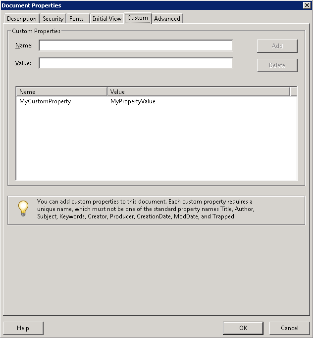

Apache™ FOP Output Formats
Apache™ FOP supports multiple output formats by using a different renderer for each format. The renderers do not all have the same set of capabilities, sometimes because of the output format itself, sometimes because some renderers get more development attention than others.
General Information
Fonts
Most FOP renderers use a FOP-specific system for font registration. However, the Java2D/AWT and print renderers use the Java AWT package, which gets its font information from the operating system registration. This can result in several differences, including actually using different fonts, and having different font metrics for the same font. The net effect is that the layout of a given FO document can be quite different between renderers that do not use the same font information.
Theoretically, there's some potential to make the output of the PDF/PS renderers match the output of the Java2D-based renderers. If FOP used the font metrics from its own font subsystem but still used Java2D for text painting in the Java2D-based renderers, this could probably be achieved. However, this approach hasn't been implemented, yet.
With a work-around, it is possible to match the PDF/PS output in a Java2D-based renderer pretty closely. The clue is to use the intermediate format. The trick is to layout the document using FOP's own font subsystem but then render the document using Java2D. Here are the necessary steps (using the command-line):
-
Produce an IF file:
fop -fo myfile.fo -at application/pdf myfile.at.xml
Specifying "application/pdf" for the "
-at" parameter causes FOP to use FOP's own font subsystem (which is used by the PDF renderer). Note that no PDF file is created in this step. -
Render to a PDF file:
fop -atin myfile.at.xml -pdf myfile.pdf
-
Render to a Java2D-based renderer:
-
fop -atin myfile.at.xml -print -
fop -atin myfile.at.xml -awt -
fop -atin myfile.at.xml -tiff myfile.tiff
-
Output to a Printer or Other Device
The most obvious way to print your document is to use the FOP print renderer, which uses the Java2D API (AWT). However, you can also send output from the Postscript renderer directly to a Postscript device, or output from the PCL renderer directly to a PCL device.
Here are Windows command-line examples for Postscript and PCL:
fop ... -ps \\computername\printer
fop ... -pcl \\computername\printer
Here is some Java code to accomplish the task in UNIX:
proc = Runtime.getRuntime().exec("lp -d" + print_queue + " -o -dp -");
out = proc.getOutputStream();
Set the output MIME type to "application/x-pcl" (MimeConstants.MIME_PCL) and it happily sends the PCL to the UNIX printer queue.
PDF is the best supported output format. It is also the most accurate with text and layout. This creates a PDF document that is streamed out as each page is rendered. This means that the internal page index information is stored near the end of the document. The PDF version supported is 1.4. PDF versions are forwards/backwards compatible.
Note that FOP does not currently support PDF/A-1a. Support for Tagged PDF, PDF/A-1b and PDF/X has recently been added, however.
Fonts
PDF has a set of fonts that are always available to all PDF viewers; to quote from the PDF Specification:
"PDF prescribes a set of 14 standard fonts that can be used without prior definition. These include four faces each of three Latin text typefaces (Courier, Helvetica, and Times), as well as two symbolic fonts (Symbol and ITC Zapf Dingbats). These fonts, or suitable substitute fonts with the same metrics, are guaranteed to be available in all PDF viewer applications."
Post-processing
FOP does not currently support several desirable PDF features: watermarks and signatures. One workaround is to use Adobe Acrobat (the full version, not the Reader) to process the file manually or with scripting that it supports.
Another popular post-processing tool is iText, which has tools for adding security features, document properties, watermarks, and many other features to PDF files.
public static void main(String args[]) {
try {
ByteArrayOutputStream fopout = new ByteArrayOutputStream();
FileOutputStream outfile = new FileOutputStream(args[2]);
FopFactory fopFactory = FopFactory.newInstance(new File(".").toURI());
Fop fop = fopFactory.newFop(MimeConstants.MIME_PDF, fopout);
Transformer transformer = TransformerFactory.newInstance().newTransformer(
new StreamSource(new File(args[1])));
transformer.transform(new StreamSource(new File(args[0])),
new SAXResult(fop.getDefaultHandler()));
PdfReader reader = new PdfReader(fopout.toByteArray());
int n = reader.getNumberOfPages();
Document document = new Document(reader.getPageSizeWithRotation(1));
PdfWriter writer = PdfWriter.getInstance(document, outfile);
writer.setEncryption(PdfWriter.STRENGTH40BITS, "pdf", null,
PdfWriter.AllowCopy);
document.open();
PdfContentByte cb = writer.getDirectContent();
PdfImportedPage page;
int rotation;
int i = 0;
while (i < n) {
i++;
document.setPageSize(reader.getPageSizeWithRotation(i));
document.newPage();
page = writer.getImportedPage(reader, i);
rotation = reader.getPageRotation(i);
if (rotation == 90 || rotation == 270) {
cb.addTemplate(page, 0, -1f, 1f, 0, 0,
reader.getPageSizeWithRotation(i).height());
} else {
cb.addTemplate(page, 1f, 0, 0, 1f, 0, 0);
}
System.out.println("Processed page " + i);
}
document.close();
} catch (Exception e) {
e.printStackTrace();
}
}
Check the iText tutorial and documentation for setting access flags, password, encryption strength and other parameters.
Watermarks
In addition to the PDF Post-processing options, consider the following workarounds:
-
Use a background image for the body region.
-
(submitted by Trevor Campbell) Place an image in a region that overlaps the flowing text. For example, make region-before large enough to contain your image. Then include a block (if necessary, use an absolutely positioned block-container) containing the watermark image in the static-content for the region-before. Note that the image will be drawn on top of the normal content.
Extensions
The PDF Renderer supports some PDF specific extensions which can be embedded into the input FO document. To use the extensions the appropriate namespace must be declared in the fo:root element like this:
<fo:root xmlns:fo="http://www.w3.org/1999/XSL/Format"
xmlns:pdf="http://xmlgraphics.apache.org/fop/extensions/pdf">
Embedded Files
It is possible to attach/embed arbitrary files into a PDF file. You can give a name and a description of the file. Example:
<fo:declarations>
<pdf:embedded-file filename="image.jpg" src="url(file:///C:/Temp/myimage.jpg)" description="My image"/>
<pdf:embedded-file src="url(file:///C:/Temp/MyTextDoc.odt)"/>
</fo:declarations>
pdf:embedded-file must be a child of fo:declarations. The "src" property is used to reference the file that is to be embedded. This property uses the "uri-specification" datatype from the XSL-FO specification. The "filename" property is optional. If it is missing the filename is automatically set from the URI/IRI of the "src" property. An optional description can also be added to further describe the file attachment.
It is also possible to reference an embedded file from an fo:basic-link. Use the special "embedded-file:" URI scheme with the filename as single argument after the URI scheme. Example:
<fo:basic-link external-destination="url(embedded-file:image.jpg)">Attached Image</fo:basic-link>
Note: Not all PDF Viewers (including some Acrobat Versions) will open the embedded file when clicking on the link. In that case, the user will have to open he attachment via the separate list of file attachments.
Custom Document Properties
In Adobe Reader (and possibly other PDF viewers), in the Document Properties window,
there is a tab that shows custom properties that have been set on the document:

Such properties are stored in the PDF in the form of additional key/value pairs in the
Document Information Dictionary (the Info dictionary). They can be set in the
FO document using the pdf:info extension element as a child of fo:declarations:
<fo:declarations>
<pdf:info xmlns:pdf="http://xmlgraphics.apache.org/fop/extensions/pdf">
<pdf:name key="MyCustomProperty">MyPropertyValue</pdf:name>
</pdf:info>
</fo:declarations>
Each custom property must be specified using the pdf:name element. Remember that the property name must be different to the reserved keywords, which are Title, Author, Subject, Keywords, Creator, Producer, CreationDate, ModDate and Trapped.
PDF Linearization
Linearization is helpful to allow viewing of a pdf over a slow connection. Needs to be enabled using fop.xconf:
<fop version="1.0">
<renderers>
<renderer mime="application/pdf">
<linearization>true</linearization>
</renderer>
</renderers>
</fop>
PostScript
The PostScript renderer has been brought up to a similar quality as the PDF renderer, but may still be missing certain features. Currently, the PostScript renderer generates PostScript Level 3 with most DSC comments. Actually, the only Level 3 features used are the FlateDecode and DCTDecode filter (the latter is used for 1:1 embedding of JPEG images), everything else is Level 2.
Configuration
The PostScript renderer configuration currently allows the following settings:
<renderer mime="application/postscript">
<auto-rotate-landscape>false</auto-rotate-landscape>
<language-level>3</language-level>
<optimize-resources>false</optimize-resources>
<safe-set-page-device>false</safe-set-page-device>
<dsc-compliant>true</dsc-compliant>
<rendering>quality</rendering>
<acrobat-downsample>true</acrobat-downsample>
</renderer>
The default value for the "auto-rotate-landscape" setting is "false". Setting it to "true" will automatically rotate landscape pages and will mark them as landscape.
The default value for the "language-level" setting is "3". This setting specifies the PostScript language level which should be used by FOP. Set this to "2" only if you don't have a Level 3 capable interpreter.
The default value for the "optimize-resources" setting is "false". Setting it to "true" will produce the PostScript file in two steps. A temporary file will be written first which will then be processed to add only the fonts which were really used and images are added to the stream only once as PostScript forms. This will reduce file size but can potentially increase the memory needed in the interpreter to process.
The default value for the "safe-set-page-device" setting is "false". Setting it to "true" will cause the renderer to invoke a postscript macro which guards against the possibility of invalid/unsupported postscript key/values being issued to the implementing postscript page device.
The default value for the "dsc-compliant" setting is "true". Setting it to "false" will break DSC compliance by minimizing the number of setpagedevice calls in the postscript document output. This feature may be useful when unwanted blank pages are experienced in your postscript output. This problem is caused by the particular postscript implementation issuing unwanted postscript subsystem initgraphics/erasepage calls on each setpagedevice call.
The default value for the "rendering" setting is "quality". Setting it to "size" optimizes rendering for smaller file sizes which can involve minor compromises in rendering quality. For example, solid borders are then painted as plain rectangles instead of the elaborate painting instructions required for mixed-color borders.
The default value for the "acrobat-downsample" setting is "false". Setting it to "true" can involve minor compromises in rendering quality to allow compatibility with Adobe Acrobat.
Limitations
-
No image transparency is available.
-
PPD support is still missing.
PCL
This format is for the Hewlett-Packard PCL printers and other printers supporting PCL. It should produce output as close to identical as possible to the printed output of the PDFRenderer within the limitations of the renderer, and output device.
The output created by the PCLRenderer is generic PCL 5, HP GL/2 and PJL. This should allow any device fully supporting PCL 5 to be able to print the output generated by the PCLRenderer. PJL is used to control the print job and switch to the PCL language. PCL 5 is used for text, raster graphics and rectangular fill graphics. HP GL/2 is used for more complex painting operations. Certain painting operations are done off-screen and rendered to PCL as bitmaps because of limitations in PCL 5.
Truetype fonts can be embedded, other font formats will be rendered as bitmaps.
References
Limitations
-
Text or graphics outside the left or top of the printable area are not rendered properly. This is a limitation of PCL, not FOP. In general, things that should print to the left of the printable area are shifted to the right so that they start at the left edge of the printable area.
-
The Helvetica and Times fonts are not well supported among PCL printers so Helvetica is mapped to Arial and Times is mapped to Times New. This is done in the PCLRenderer, no changes are required in the FO's. The metrics and appearance for Helvetica/Arial and Times/Times New are nearly identical, so this has not been a problem so far.
-
For the non-symbol fonts, the ISO 8859-1 symbol set is used (PCL set "0N").
-
All fonts available to the Java2D subsystem are usable. The texts are painted as bitmap much like the Windows PCL drivers do.
-
Multibyte characters are not supported.
-
Monochrome output is the default, color needs to be enabled in config. PCL5c color extensions will only be implemented on demand. By default color and grayscale images are converted to monochrome bitmaps (1-bit). Dithering only occurs if the JAI image library is available.
-
Images are scaled up to the next resolution level supported by PCL (75, 100, 150, 200, 300, 600 dpi). For color and grayscale images an even higher PCL resolution is selected to give the dithering algorithm a chance to improve the bitmap quality.
-
Currently, there's no support for clipping and image transparency, largely because PCL 5 has certain limitations.
Configuration
The PCL renderer configuration currently allows the following settings:
<renderer mime="application/x-pcl">
<rendering>quality</rendering>
<text-rendering>bitmap</text-rendering>
<disable-pjl>false</disable-pjl>
<images mode="color"/>
</renderer>
The default value for the "rendering" setting is "speed" which causes borders to be painted as plain rectangles. In this mode, no special borders (dotted, dashed etc.) are available. If you want support for all border modes, set the value to "quality" as indicated above. This will cause the borders to be painted as bitmaps.
The default value for the "text-rendering" setting is "auto" which paints the base fonts using PCL fonts. Non-base fonts are painted as bitmaps through Java2D. If the mix of painting methods results in unwelcome output, you can set this to "bitmap" which causes all text to be rendered as bitmaps.
The default value for the "disable-pjl" setting is "false". This means that the PCL renderer usually generates PJL commands before and after the document in order to switch a printer into PCL language. PJL commands can be disabled if you set this value to "true".
The default value for "image" mode is monochrome output, use "mode" equals "color" to enable color output.
You can control the output resolution for the PCL using the "target resolution" setting on the FOUserAgent. The actual value will be rounded up to the next supported PCL resolution. Currently, only 300 and 600 dpi are supported which should be enough for most use cases. Note that this setting directly affects the size of the output file and the print quality.
Extensions
The PCL Renderer supports some PCL specific extensions which can be embedded into the input FO document. To use the extensions the appropriate namespace must be declared in the fo:root element like this:
<fo:root xmlns:fo="http://www.w3.org/1999/XSL/Format"
xmlns:pcl="http://xmlgraphics.apache.org/fop/extensions/pcl">
Page Source (Tray selection)
The page-source extension attribute on fo:simple-page-master allows to select the paper tray the sheet for a particular simple-page-master is to be taken from. Example:
<fo:layout-master-set>
<fo:simple-page-master master-name="simple" pcl:paper-source="2">
...
</fo:simple-page-master>
</fo:layout-master-set>
Note: the tray number is a positive integer and the value depends on the target printer. Not all PCL printers support the same paper trays. Usually, "1" is the default tray, "2" is the manual paper feed, "3" is the manual envelope feed, "4" is the "lower" tray and "7" is "auto-select". Consult the technical reference for your printer for all available values.
Output Bin
The output-bin extension attribute on fo:simple-page-master allows to select the output bin into which the printed output should be fed. Example:
<fo:layout-master-set>
<fo:simple-page-master master-name="simple" pcl:output-bin="2">
...
</fo:simple-page-master>
</fo:layout-master-set>
Note: the output bin number is a positive integer and the value depends on the target printer. Not all PCL printers support the same output bins. Usually, "1" is the upper output bin, "2" is the lower (rear) output bin. Consult the technical reference for your printer for all available values.
Page Duplex Mode
The duplex-mode extension attribute on fo:simple-page-master allows to select the duplex mode to be used for a particular simple-page-master. Example:
<fo:layout-master-set>
<fo:simple-page-master master-name="simple" pcl:duplex-mode="0">
...
</fo:simple-page-master>
</fo:layout-master-set>
Note: the duplex is a positive integer and the value depends on the target printer. Not all PCL printers support duplexing. Usually, "0" is simplex, "1" is duplex (long-edge binding), "2" is duplex (short-edge binding). Consult the technical reference for your printer for all available values.
AFP
The FOP AFP Renderer deals with creating documents conforming to the IBM AFP document architecture also refered to as MO:DCA (Mixed Object Document Content Architecture).
The mapping of XSL-FO elements to the major MO:DCA structures is as follows:
| XSL-FO element | MO:DCA-P object |
|---|---|
| fo:root | Document |
| fo:page-sequence | Page Group |
| fo:simple-page-master | Page |
FOP creates exactly one Document per Printfile with an optional Resource Group at the beginning. FOP does not create document indices.
References
Limitations
This list is most likely badly incomplete.
-
Clipping of text and graphics is not supported.
-
TrueType, IBM outline, raster fonts and to a limited extend the original fonts built into FOP are supported.
Deployment in older environments
There are still a big number of older (or limited) MO:DCA/IPDS environments in production out there. AFP has grown in functionality over time and not every environment supports the latest features. We're trying to make AFP output work in as many environments as possible. However, to make AFP output work on older environments it is recommended to set to configuration to 1 bit per pixel (see below on how to do this). In this case, all images are converted to bi-level images using IOCA function set 10 (FS10) and are enclosed in page-segments since some implementation cannot deal with IOCA objects directly. If a higher number of bits per pixel is configured, FOP has to switch to at least FS11 which may not work everywhere.
Configuration
Fonts
The AFP Renderer requires special configuration particularly related to fonts. AFP Render configuration is done through the normal FOP configuration file. The MIME type for the AFP Renderer is application/x-afp which means the AFP Renderer section in the FOP configuration file looks like:
<renderer mime="application/x-afp">
<!-- AFP Renderer -->
...
</renderer>
There are 5 font configuration variants supported:
-
TrueType fonts
-
IBM Raster fonts
-
IBM Outline fonts
-
IBM CID-keyed (Type 0) fonts
-
FOP built-in Base14 fonts
TrueType font configuration looks like:
<font kerning="yes" embed-url="fonts/Uvb_____.TTF" name="Univers">
<font-triplet name="Univers" style="normal" weight="normal"/>
<font-triplet name="any" style="normal" weight="normal"/>
</font>
A typical raster font configuration looks like:
<!-- This is an example of mapping actual IBM raster fonts / code pages to a FOP font -->
<font>
<!-- The afp-font element defines the IBM code page, the matching Java encoding and the
base URI for the font -->
<afp-font type="raster" codepage="T1V10500" encoding="Cp500" base-uri="fonts/ibm/">
<!-- For a raster font a separate element for each font size is required providing
the font size and the corresponding IBM Character set name -->
<afp-raster-font size="7" characterset="C0N20070"/>
<afp-raster-font size="8" characterset="C0N20080"/>
<afp-raster-font size="10" characterset="C0N20000"/>
<afp-raster-font size="11" characterset="C0N200A0"/>
<afp-raster-font size="12" characterset="C0N200B0"/>
<afp-raster-font size="14" characterset="C0N200D0"/>
<afp-raster-font size="16" characterset="C0N200F0"/>
<afp-raster-font size="18" characterset="C0N200H0"/>
<afp-raster-font size="20" characterset="C0N200J0"/>
<afp-raster-font size="24" characterset="C0N200N0"/>
<afp-raster-font size="30" characterset="C0N200T0"/>
<afp-raster-font size="36" characterset="C0N200Z0"/>
</afp-font>
<!-- These are the usual FOP font triplets as they apply to this font -->
<font-triplet name="serif" style="normal" weight="normal"/>
<font-triplet name="Times" style="normal" weight="normal"/>
<font-triplet name="Times-Roman" style="normal" weight="normal"/>
<font-triplet name="TimesNewRoman" style="normal" weight="normal"/>
</font>
An outline font configuration is simpler as the individual font size entries are not required. However, the characterset definition is now required within the afp-font element.
<font>
<afp-font type="outline" codepage="T1V10500" encoding="Cp500" characterset="CZH200 "
base-uri="file:/fonts/ibm" />
<font-triplet name="sans-serif" style="normal" weight="normal"/>
<font-triplet name="Helvetica" style="normal" weight="normal"/>
<font-triplet name="any" style="normal" weight="normal"/>
</font>
If "base-uri" is missing or a relative URI, the fonts are resolved relative to the font base URI specified in the configuration (or on the FopFactory).
A CID-keyed font (Type 0, double-byte outline font) configuration is much the same as an outline font. However, the characterset definition is now required within the afp-font element.
<font>
<afp-font type="CIDKeyed" characterset="CZJHMNU"
codepage="T1120000" encoding="UnicodeBigUnmarked"
base-uri="file:/fonts/ibm" />
<font-triplet name="J-Heisei Mincho" style="normal" weight="normal" />
</font>
Note that the value of the encoding attribute in the example is the double-byte encoding 'UnicodeBigUnmarked' (UTF-16BE).
Experimentation has shown that the font metrics for the FOP built-in Base14 fonts are actually very similar to some of the IBM outline and raster fonts. In cases were the IBM font files are not available the base-uri attribute in the afp-font element can be replaced by a base14-font attribute giving the name of the matching Base14 font. In this case the AFP Renderer will take the font metrics from the built-in font.
<!-- The following are examples of defining outline fonts based on FOP built-in
font metrics for the Adobe Base14 fonts -->
<!-- sans-serif fonts based on Helvetica -->
<font>
<afp-font type="outline" codepage="T1V10500" encoding="Cp500" characterset="CZH200 "
base14-font="Helvetica" />
<font-triplet name="sans-serif" style="normal" weight="normal"/>
<font-triplet name="Helvetica" style="normal" weight="normal"/>
<font-triplet name="any" style="normal" weight="normal"/>
</font>
<font>
<afp-font type="outline" codepage="T1V10500" encoding="Cp500" characterset="CZH300 "
base14-font="HelveticaOblique" />
<font-triplet name="sans-serif" style="italic" weight="normal"/>
<font-triplet name="Helvetica" style="italic" weight="normal"/>
<font-triplet name="any" style="italic" weight="normal"/>
</font>
<font>
<afp-font type="outline" codepage="T1V10500" encoding="Cp500" characterset="CZH400 "
base14-font="HelveticaBold" />
<font-triplet name="sans-serif" style="normal" weight="bold"/>
<font-triplet name="Helvetica" style="normal" weight="bold"/>
<font-triplet name="any" style="normal" weight="bold"/>
</font>
<font>
<afp-font type="outline" codepage="T1V10500" encoding="Cp500" characterset="CZH500 "
base14-font="HelveticaBoldOblique" />
<font-triplet name="sans-serif" style="italic" weight="bold"/>
<font-triplet name="Helvetica" style="italic" weight="bold"/>
<font-triplet name="any" style="italic" weight="bold"/>
</font>
<!-- serif fonts based on Times Roman -->
<font>
<afp-font type="outline" codepage="T1V10500" encoding="Cp500" characterset="CZN200 "
base14-font="TimesRoman" />
<font-triplet name="serif" style="normal" weight="normal"/>
<font-triplet name="Times" style="normal" weight="normal"/>
<font-triplet name="Times-Roman" style="normal" weight="normal"/>
</font>
<!-- The following are examples of defining raster fonts based on FOP built-in
font metrics for the Adobe Base14 fonts -->
<!-- monospaced fonts based on Courier -->
<font>
<afp-font type="raster" codepage="T1V10500" encoding="Cp500">
<afp-raster-font size="7" characterset="C0420070" base14-font="Courier"/>
<afp-raster-font size="8" characterset="C0420080" base14-font="Courier"/>
<afp-raster-font size="10" characterset="C0420000" base14-font="Courier"/>
<afp-raster-font size="12" characterset="C04200B0" base14-font="Courier"/>
<afp-raster-font size="14" characterset="C04200D0" base14-font="Courier"/>
<afp-raster-font size="20" characterset="C04200J0" base14-font="Courier"/>
</afp-font>
<font-triplet name="monospace" style="normal" weight="normal"/>
<font-triplet name="Courier" style="normal" weight="normal"/>
</font>
<font>
<afp-font type="raster" codepage="T1V10500" encoding="Cp500">
<afp-raster-font size="7" characterset="C0440070" base14-font="CourierBold"/>
<afp-raster-font size="8" characterset="C0440080" base14-font="CourierBold"/>
<afp-raster-font size="10" characterset="C0440000" base14-font="CourierBold"/>
<afp-raster-font size="12" characterset="C04400B0" base14-font="CourierBold"/>
<afp-raster-font size="14" characterset="C04400D0" base14-font="CourierBold"/>
<afp-raster-font size="20" characterset="C04400J0" base14-font="CourierBold"/>
</afp-font>
<font-triplet name="monospace" style="normal" weight="bold"/>
<font-triplet name="Courier" style="normal" weight="bold"/>
</font>
By default, all manually configured fonts are embedded, unless they are matched in the section of the configuration file. However, the default fonts shown above will not be embedded.
For double byte EBCDIC encoded character sets, there is an optional tag that must be set to prevent characters from being miscoded. This defaults to "false" if not specified.
<afp-font type="CIDKeyed" codepage="T10835 " encoding="Cp937" characterset="CZTKAI" ebcdic-dbcs="true"/>
Output Resolution
By default the AFP Renderer creates output with a resolution of 240 dpi. This can be overridden by the
<renderer-resolution>240</renderer-resolution>
Images
By default the AFP Renderer converts all images to 8 bit grey level. This can be overridden by the
<images mode="color" />
This will put images as RGB images into the AFP output stream. The default setting is:
<images mode="b+w" bits-per-pixel="8" native="true"/>
Only the values "color" and "b+w" are allowed for the mode attribute.
The bits-per-pixel attribute is ignored if mode is "color". For "b+w" mode is must be 1, 4, or 8.
<images native="true"/>
When the native attribute is specified and set to "true", all image resources will be natively injected into the datastream using an object container rather than being converted into an IOCA FS45 image. Support for native image formats (e.g. JPEG, TIFF, GIF) is not always available on printer implementations so by default this configuration option is set to "false".
Setting cmyk="true" on the images element will enable CMYK colors. This will only have an effect if the color mode is set to "color". Example:
<images mode="color" cmyk="true"/>
When the color mode is set to 1 bit (bi-level), the "dithering-quality" attribute can be used to select the level of quality to use when converting images to bi-level images. Valid values for this attribute are floating point numbers from 0.0 (fastest) to 1.0 (best), or special values: "minimum" (=0.0), "maximum" (1.0), "medium" (0.5, the default). For the higher settings to work as expected, JAI needs to be present in the classpath. If JAI is present, 0.0 results in a minimal darkness-level switching between white and black. 0.5 does bayer-based dithering and 1.0 will use error-diffusion dithering. The higher the value, the higher the quality and the slower the processing of the images.
<images mode="b+w" bits-per-pixel="1" dithering-quality="maximum"/>
When the boolean attribute pseg (default false) is set to true, non-inline FS11 and FS45 IOCA images are wrapped in page segment. This option is provided to support printers/print servers that require this MO:DCA structure.
<images mode="b+w" bits-per-pixel="8" pseg="true"/>
Setting the boolean attribute fs45 to true (default false) will force all images to FS45.
<images mode="b+w" bits-per-pixel="8" fs45="true"/>
By default, images are rasterized to a bitmap and the bitmap is included in the AFP doc. However it is possible to encode in a lossless way to maintain maximum quality. But due to lack of support for compression schemes like LZW (patent concerns), bitmap data is currently not compressed resulting in large AFP files. Using the "allow-embedding" attribute on jpeg child element allows the user to pass the JPEG as is in the document. The default is set to "false" since there are compatibility concerns as some AFP printers don't support JPEG decoding. Using the "bitmap-encoding-quality" attribute it is possible to enable lossy compression (JPEG baseline DCT) on bitmap images. The default is "1.0" which means lossless encoding. Setting a value lower than 1.0, JPEG compression is enabled and the setting is used as the quality setting when encoding bitmap data. Note that this setting does not always have an effect. Bi-level (1 bit) bitmaps are not compressed using JPEG. Example:
<images mode="color" cmyk="true">
<jpeg allow-embedding="false" bitmap-encoding-quality="0.8"/>
</images>
IOCA image data placed in the AFP Resource Group (i.e. non-inline images) is wrapped in a Page Segment for single-bit and monochrome images.
GOCA (Vector Graphics)
Not all AFP implementations support GOCA. Some also have bugs related to GOCA. Therefore, it is desirable to have some control over the generation of GOCA graphics.
GOCA is enabled by default. You can disable GOCA entirely in which case the AFP support falls back to generating bitmaps for vector graphics. Example:
<goca enabled="false"/>
Some AFP implementations have trouble rendering text in GOCA. You can instruct the AFP support to render text as shapes (i.e. use vector graphics to paint text). Example:
<goca enabled="true" text="shapes"/>
If you disable GOCA or let text render as shapes, the size of the generated AFP usually increases considerably.
Shading
By default, filled rectangles are painted using their given color using a PTOCA I-axis rule (DIR). But not all environments handle these colors correctly. That's why a setting is supported that paints the rectangles using an ordered dither pattern (bi-level) with an inline IOCA FS10 image that is used together with the "replicate and trim" mapping. The optional "shading" element can be used to control the shading mode. Its default value is "color". To enable the dithered mode, use "dithered". Example:
<shading>dithered</shading>
Resource Group File
By default the AFP Renderer will place all data resource objects such as images within the document of the main output datastream. An external resource group file where document resources may be specified with the
<resource-group-file>external_resources.afp</resource-group-file>
Resource Level Defaults
By default, bitmap image objects (or page segments derived from them) are put in the print-file-level resource group and GOCA graphics are inlined for compatibility with the AFP Workbench tool.
It is possible to override these defaults, either per image (see the afp:resource-level extension attribute below) or by specifying different defaults in the configuration:
<default-resource-levels goca="print-file" bitmap="inline"/>
"goca" refers to GOCA graphics and "bitmap" refers to IOCA images. The possible values for the attributes are "inline" and "print-file". In the future, additional possibilities may be added.
To be compatible with Workbench viewer or other legacy tools and also move resources to the resource group, you can use the following settings. GOCA resources will be wrapped with a page segment.
<default-resource-levels goca="print-file" bitmap="print-file"/>
<goca pseg="true"/>
Extensions
The AFP Renderer supports some AFP specific extensions which can be embedded into the input fo document. To use the extensions the appropriate namespace must be declared in the fo:root element like this:
<fo:root xmlns:fo="http://www.w3.org/1999/XSL/Format"
xmlns:afp="http://xmlgraphics.apache.org/fop/extensions/afp">
Page Overlay (IPO) Extension
The include-page-overlay extension element allows to define on a per simple-page-master basis a page overlay resource. Example:
<fo:layout-master-set>
<fo:simple-page-master master-name="simple">
<afp:include-page-overlay name="O1SAMP1 " x="20mm" y="30mm" />
...
</fo:simple-page-master>
</fo:layout-master-set>
The mandatory name attribute must refer to an 8 character (space padded) resource name that must be known in the AFP processing environment. Optional x and y attributes can be specified to place the Overlay at an offset from the top left of the page.
Page Segment (IPS) Extension
The include-page-segment extension element allows to define resource substitution for fo:external-graphics elements. Example:
<fo:root xmlns:fo="http://www.w3.org/1999/XSL/Format"
xmlns:afp="http://xmlgraphics.apache.org/fop/extensions/afp">
<fo:layout-master-set>
<fo:simple-page-master master-name="simple">
<afp:include-page-segment name="S1ISLOGO" src="../../resources/images/bgimg300dpi.jpg" />
<fo:region-body/>
</fo:simple-page-master>
</fo:layout-master-set>
The include-page-segment extension element can only occur within a simple-page-master. Multiple include-page-segment extension elements within a simple-page-master are allowed. The mandatory name attribute must refer to an 8 character (space padded) resource name that must be known in the AFP processing environment. The value of the mandatory src attribute is compared against the value of the src attribute in fo:external-graphic elements and if it is identical (string matching is used) in the generated AFP the external graphic is replaced by a reference to the given resource.
The effect here is that whenever FOP encounters the URI specified in the extension, it will effectively generate code to include the page segment with the given name instead of embedding the image referenced by the URI. The URI is still required as the underlying image serves as a provider for the intrinsic size of the image (At the moment, FOP is unable to extract the intrinsic size of the page segment from an AFP resource file). For the image to appear in an AFP viewer or to be printed, the AFP resource must be available on the target device. FOP does not embed the page segment in the generated file. Please also note that page segments cannot be scaled. They are always rendered in their intrinsic size.
The include-page-segment extension element has the optional attribute resource-file. The value of this is a URI to a resource containing a page segment with the declared name. In this case FOP embeds the page segment into the generated document so that the external resource does not have to be supplied in the print job.
Tag Logical Element (TLE) Extension
The tag-logical-element extension element allows to injects TLEs into the AFP output stream. Example:
<fo:root xmlns:fo="http://www.w3.org/1999/XSL/Format"
xmlns:afp="http://xmlgraphics.apache.org/fop/extensions/afp">
<fo:layout-master-set>
<fo:simple-page-master master-name="simple">
<afp:tag-logical-element name="The TLE Name" value="The TLE Value"
encoding="500"/>
<fo:region-body/>
</fo:simple-page-master>
</fo:layout-master-set>
[..]
<fo:page-sequence master-reference="simple">
<afp:tag-logical-element name="foo" value="bar"/>
<fo:flow flow-name="xsl-region-body">
[..]
The tag-logical-element extension element can appear within a simple-page-master (page level) or it can appear as child of page-sequence (page group level). Multiple tag-logical-element extension elements within a simple-page-master or page-sequence are allowed. The name and value attributes are mandatory. The encoding attribute specifying a CCSID encoding is optional.
No Operation (NOP) Extension
The no-operation extension provides the ability to carry up to 32K of comments or any other type of unarchitected data into the AFP output stream. Example:
<fo:root xmlns:fo="http://www.w3.org/1999/XSL/Format"
xmlns:afp="http://xmlgraphics.apache.org/fop/extensions/afp">
<fo:layout-master-set>
<fo:simple-page-master master-name="simple">
<afp:no-operation name="My NOP">insert up to 32k of character data here!</afp:no-operation>
</fo:simple-page-master>
</fo:layout-master-set>
The no-operation extension element can appear as child of simple-page-master (appears after "Begin Page" BPG), page-sequence (appears after "Begin Named Page Group" BNG and declarations (appears after "Begin Document" BDT). Multiple no-operation extension elements inside the same formatting object are allowed. Each NOP will appear right after the respective "Begin" field indicated above even if it is specified as the last child under its parent. The order inside the parent will be maintained. The "placement" attribute can be used to have the NOP appear before the "End" field of the object rather than after the "Begin" field. Specify placement="before-end" to do that. Please note that, at the moment, this only has an effect for NOPs that are children of the page-sequence formatting object. The "name" attribute is mandatory but will not appear inside the AFP stream.
Invoke Medium Map (IMM) Extension
The invoke-medium-map extension allows to generate IMM fields (Invoke Medium Map) in the generated AFP output. Example:
<fo:root xmlns:fo="http://www.w3.org/1999/XSL/Format"
xmlns:afp="http://xmlgraphics.apache.org/fop/extensions/afp">
[..]
<fo:page-sequence master-reference="normal">
<afp:invoke-medium-map name="MYMAP"/>
<fo:flow flow-name="xsl-region-body">
[..]
The invoke-medium-map element is allowed as child of fo:page-sequence (page group level) or fo:simple-page-master. It is NOT supported on document level (fo:root), yet. FOP also doesn't support specifying medium maps inside XML (using BMM/EMM). It can only reference an existing medium map by name. The medium map has to be constructed through different means and available on the target platform.
Form Maps/Defs
Apache FOP supports embedding an external form map resource in the generated AFP output. This is done using the afp:include-form-map extension. An example:
<fo:root xmlns:fo="http://www.w3.org/1999/XSL/Format"
xmlns:afp="http://xmlgraphics.apache.org/fop/extensions/afp">
[..]
<fo:declarations>
<afp:include-form-map name="F1SAMP1" src="file:f1samp1.fde"/>
</fo:declarations>
The afp:include-form-map is to be placed as a direct child of fo:declarations. The name is an AFP resource name (max. 8 characters) and the src attribute is the URI identifying the external form map resource. When such a form map is embedded, you can use the afp:invoke-medium-map extension (described above) to invoke any medium map included in the form map.
Foreign Attributes
Resource
The resource foreign attributes provides the ability to name and control where data object resources (e.g. images/scalable vector graphics) will reside in the AFP output. The afp foreign attributes are only used in conjuntion with
<fo:root xmlns:fo="http://www.w3.org/1999/XSL/Format"
xmlns:afp="http://xmlgraphics.apache.org/fop/extensions/afp">
...
<fo:block>
<fo:external-graphic width="2.0cm" content-width="2.0cm" height="1.8cm" content-height="1.8cm"
src="examples/fo/graphics/xml_feather.gif"
afp:resource-name="feather" afp:resource-level="external" afp:resource-group-file="resources.afp"/>
</fo:block>
<fo:block>
<fo:instream-foreign-object height="758.047pt" content-height="758.047pt" width="576.96pt" content-width="576.96pt"
afp:resource-name="circles" afp:resource-level="inline">
<svg xmlns="http://www.w3.org/2000/svg" width="12cm" height="12cm">
<g style="fill-opacity:0.7; stroke:black; stroke-width:0.1cm;">
<circle cx="6cm" cy="2cm" r="100" style="fill:red;" transform="translate(0,50)" />
<circle cx="6cm" cy="2cm" r="100" style="fill:blue;" transform="translate(70,150)" />
<circle cx="6cm" cy="2cm" r="100" style="fill:green;" transform="translate(-70,150)"/>
</g>
</svg>
</fo:instream-foreign-object>
</fo:block>
The resource-level attribute where the resource object will reside in the AFP output datastream. The possible values for this are "inline", "print-file" and "external". When "external" is used a resource-group-file attribute must also be specified. Please refer to the Resource Level Defaults above to see what is used if the resource-level attribute is not specified.
OCA Color
OCA is used in AFP to set text foreground color and it is still useful in old AFP printers that have a limited support for color or don't support other color spaces (RGB, CMYK, etc...).
<fo:block color="oca(red)">Red</fo:block>
RTF
JFOR, an open source XSL-FO to RTF converter has been integrated into Apache FOP. This will create an RTF (rich text format) document that will attempt to contain as much information from the XSL-FO document as possible. It should be noted that is not possible (due to RTF's limitations) to map all XSL-FO features to RTF. For complex documents, the RTF output will never reach the feature level from PDF, for example. Thus, using RTF output is only recommended for simple documents such as letters.
The RTF output follows Microsoft's RTF specifications and produces best results on Microsoft Word.
These are some known restrictions compared to other supported output formats (not a complete list):
-
Not supported/implemented:
-
break-before/after (supported by the RTF library but not tied into the RTFHandler)
-
fo:page-number-citation-last
-
keeps (supported by the RTF library but not tied into the RTFHandler)
-
region-start/end (RTF limitation)
-
multiple columns
-
-
Only a single page-master is supported
-
Not all variations of fo:leader are supported (RTF limitation)
-
percentages are not supported everywhere
XML (Area Tree XML)
This is primarily for testing and verification. The XML created is simply a representation of the internal area tree put into XML. We use that to verify the functionality of FOP's layout engine.
The other use case of the Area Tree XML is as FOP's "intermediate format". More information on that can be found on the page dedicated to the Intermediate Format.
Java2D/AWT
The Java2DRenderer provides the basic functionality for all Java2D-based output formats (AWT viewer, direct print, PNG, TIFF).
The AWT viewer shows a window with the pages displayed inside a Java graphic. It displays one page at a time. The fonts used for the formatting and viewing depend on the fonts available to your JRE.
It is possible to directly print the document from the command line. This is done with the same code that renders to the Java2D/AWT renderer.
Known issues
If you run into the problem that the printed output is incomplete on Windows: this often happens to users printing to a PCL printer. There seems to be an incompatibility between Java and certain PCL printer drivers on Windows. Since most network-enabled laser printers support PostScript, try switching to the PostScript printer driver for that printer model.
Bitmap (TIFF/PNG)
It is possible to directly create bitmap images from the individual pages generated by the layout engine. This is done with the same code that renders to the Java2D/AWT renderer.
Currently, two output formats are supported: PNG and TIFF. TIFF produces one file with multiple pages, while PNG output produces one file per page. Note: FOP can only produce multiple files (with PNG output) if you can set a java.io.File indicating the primary PNG file using the FOUserAgent.setOutputFile(File) method.
The quality of the bitmap depends on the target resolution setting on the FOUserAgent and on further settings described below.
Configuration
The TIFF and PNG renderer configuration currently allows the following settings:
<renderer mime="image/png">
<color-mode>rgba</color-mode>
<transparent-page-background>true</transparent-page-background>
<background-color>white</background-color>
<anti-aliasing>true</anti-aliasing>
<rendering>quality</rendering>
<fonts><!-- described elsewhere --></fonts>
</renderer>
The default value for the "color-mode" setting is "rgba" which is equivalent to a 24bit RGB image with an 8bit alpha channel for transparency. Valid values are:
-
rgba: RGB with alpha channel (24bit + 8bit = 32bit) -
rgb: RGB (24bit) -
gray: gray (8bit) -
bi-level(orbinary): bi-level (1bit)
Please note that there is currently no dithering or error diffusion available for bi-level bitmap output.
The default value for the "transparent-page-background" setting is "false" which paints an opaque, white background for the whole image. If you set this to "true", no such background will be painted and you will get a transparent image if an alpha channel is available in the output format.
The default value for the "background-color" setting is "white". The color specifies in which color the page background is painted. It will only be painted if "transparent-page-background" is not set to "true". All XSL-FO colors (including color functions) can be used.
The default value for the "anti-aliasing" setting is "true". You can set this value to "false" to disable anti-aliasing and thus improve rendering speeds a bit at the loss of some image quality.
The default value for the "rendering" setting is "true". You can set this value to "false" to improve rendering speeds a bit at the loss of some image quality. If this setting has an actual effect depends on the JVM's Java2D backend.
TIFF-specific Configuration
In addition to the above values the TIFF renderer configuration allows some additional settings:
<renderer mime="image/tiff">
<transparent-page-background>true</transparent-page-background>
<compression>CCITT T.6</compression>
<single-strip>true</single-strip>
<endianness>default</endianness>
<fonts><!-- described elsewhere --></fonts>
</renderer>
The default value for the "compression" setting is "PackBits" which which is a widely supported RLE compression scheme for TIFF. The set of compression names to be used here matches the set that the Image I/O API uses. Note that not all compression schemes may be available during runtime. This depends on the actual codecs being available. Here is a list of possible values:
The default value for "endianness" is "default", which results in the default endianness for the output format being generated. Note that not all image formats allow specifying the endianness.
-
NONE(no compression) -
PackBits(RLE, run-length encoding) -
JPEG -
Deflate -
LZW -
ZLib -
CCITT T.4(Fax Group 3) -
CCITT T.6(Fax Group 4)
This setting may override any setting made using the "color-mode". For example, if "CCITT T.6" is selected, the color mode is automatically forced to "bi-level" because this compression format only supports bi-level images.
The default value for the "single-strip" is "false" resulting in the RowsPerStrip Tiff Tag equal to the number of rows. If set to "true" RowsPerStrip is set to 1.
Runtime Rendering Options
The IF-based bitmap output implementations support a rendering option with the key "target-bitmap-size" (value: java.awt.Dimension) that allows to force the pages to be proportionally fit into a bitmap of a given size. This can be used to produce thumbnails or little preview images of the individual pages. An example:
userAgent.getRenderingOptions().put(
"target-bitmap-size", new Dimension(320, 200));
TXT
The text renderer produces plain ASCII text output that attempts to match the output of the PDFRenderer as closely as possible. This was originally developed to accommodate an archive system that could only accept plain text files, and is primarily useful for getting a quick-and-dirty view of the document text. The renderer is very limited, so do not be surprised if it gives unsatisfactory results.
Because FOP lays the text onto a grid during layout, there are frequently extra or missing spaces between characters and lines, which is generally unsatisfactory. Users have reported that the optimal settings to avoid such spacing problems are:
-
font-family="Courier"
-
font-size="10pt"
-
line-height="10pt"
Output Formats in the Sandbox
Due to the state of certain renderers we moved some of them to a "sandbox" area until they are ready for more serious use. The renderers and FOEventHandlers in the sandbox can be found under src/sandbox and are compiled into build/fop-sandbox.jar during the main build. The output formats in the sandbox are marked as such below.
MIF
SVG
Wish list
Apache FOP is easily extensible and allows you to add new output formats to enhance FOP's functionality. There's a number of output formats which are on our wish list. We're looking for volunteers to help us implement them.
- ODF (Open Document Format): The standardized successor to OpenOffice's file format.